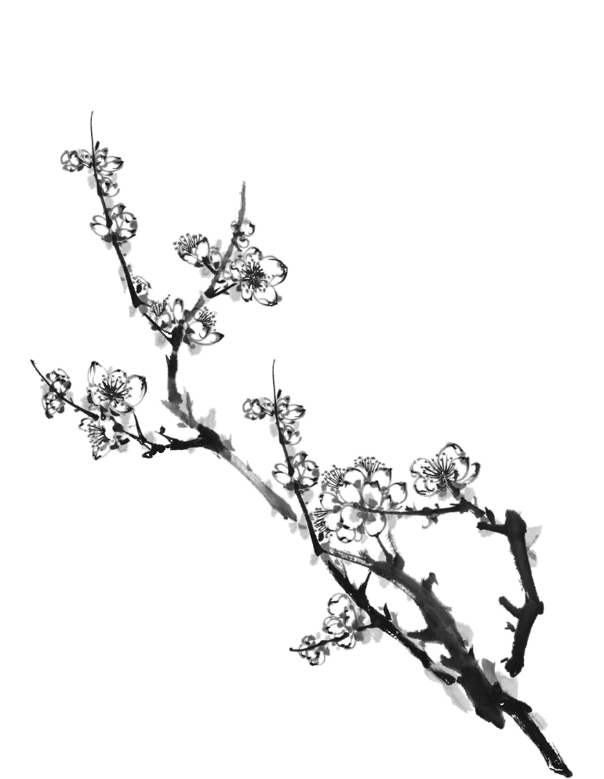

SUCCESS
支持 JANM 幫助我們的社區
作為一個非營利機構，日裔美國國家博物館必須依靠其朋友和支持者的慷慨解囊來支付全年為數十萬當地、國內和國際遊客提供項目和服務的費用。

會員
成為JANM會員！獲得免費入場、公共項目折扣以及 JANM 商店，您的支持使博物館能夠延續其傳統。

其他支持本館方式
除了會員資格外，還有許多其他方式支持博物館的工作，包括一般捐贈、兒童庭院雕刻、車輛捐贈等。

義工
日裔美國人國家博物館的核心在於其志願者，他們是一個由男女老幼組成的敬業社區，他們透過參與博物館運作的各個方面來共同致力於博物館及其使命。

青年職業交流協會
青年專業人士網絡 (YPN) 是一個由年輕專業人士組成的社會和商業協會，支持國家博物館及其提高對美國種族和文化多樣性的欣賞的使命。
你可以擁有不只一個家。只要記得你的根源，你可以決定它們在哪里生長。
宗旨
日裔美國人國家博物館始於一個夢想
日裔美國人國家博物館的使命是透過分享日裔美國人的經驗來促進對美國種族和文化多樣性的理解和欣賞。
洛杉磯作為日裔美國人歷史的國家寶庫，JANM 創作了開創性的歷史和藝術展覽、教育公共項目、屢獲殊榮的紀錄片和創新課程，講述了美國日裔人民的故事和豐富的文化遺產。當多樣性、個人尊嚴和社會正義受到損害時，JANM 也會大聲疾呼，警惕地分享從這段歷史中汲取的來之不易的教訓。其根本目的是改變生活，創造一個更公正的美國，並最終創造一個更美好的世界。
觀看簡介

參與
即將舉行的活動
JANM 提供線上及現場的活動，希望能在啟發、教育和幫助大家能與了解及體驗日裔美國人文化。